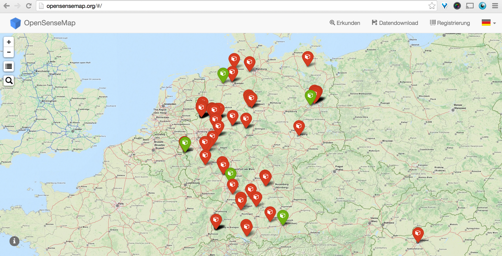

openSenseMap - publishing data on the web
Matthias Pfeil @
How to publish sensor data on the web?
Openness Simplicity Standard
RESTful
API,
Open Data under PDD Licence
It´s all about JavaScript
AngularJS
NodeJS + MongoDB
THANK YOU m.pfeil@conterra.de @matpfe